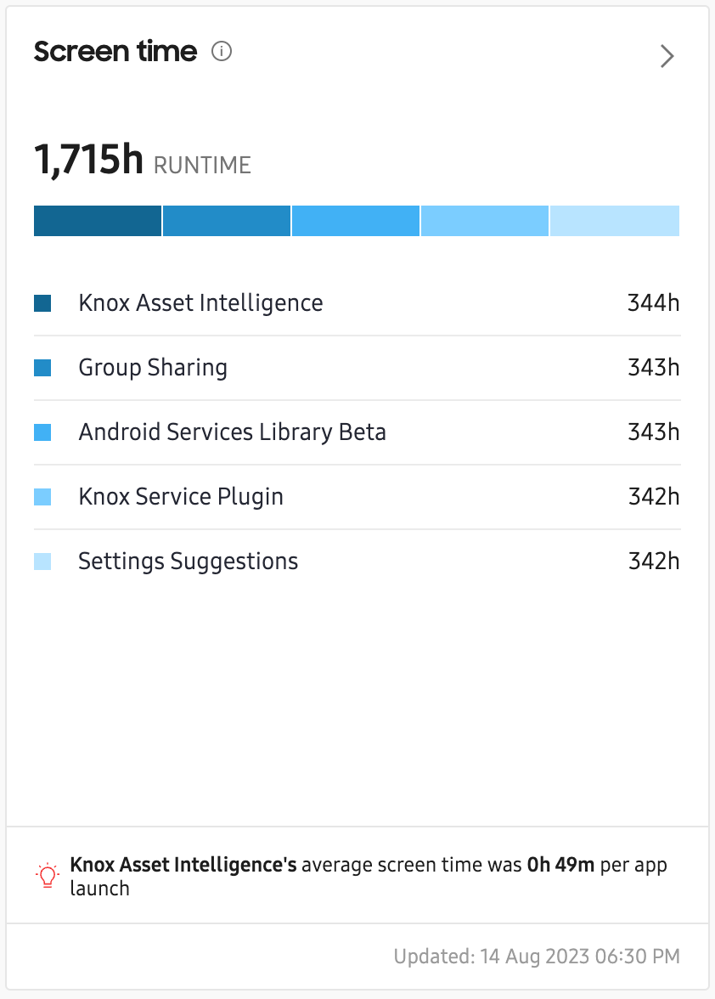
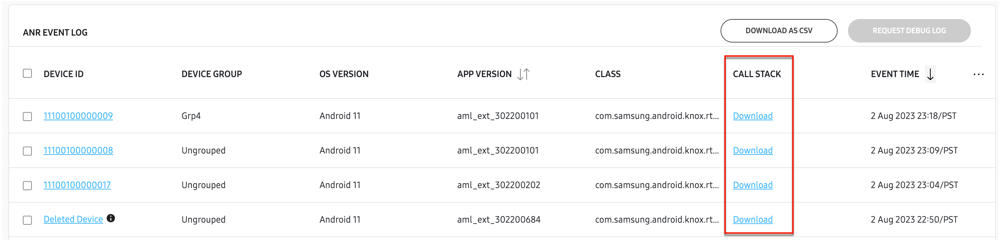
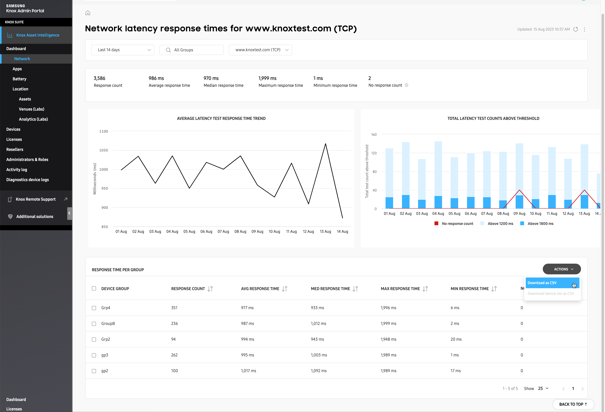
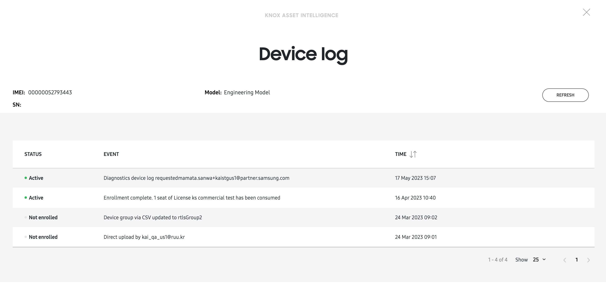
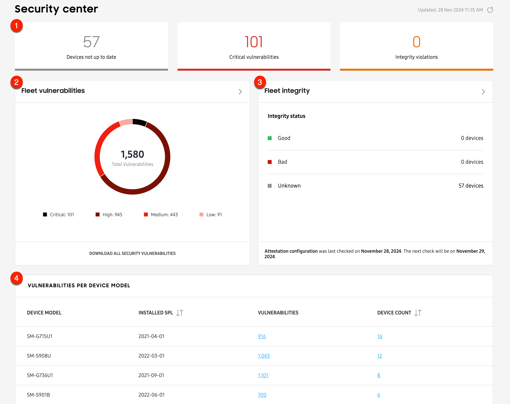

Knox Asset Intelligence 23.09 release notes
Last updated September 6th, 2023
The 23.09 release of Knox Asset Intelligence introduces the following changes:
New dashboard tile for app screen time
A new Screen time dashboard tile lets you see how many hours an app was used in the foreground, and how many times it was launched by a device user, regardless of the device’s charging state.

Extended call stack support for Apps Not Responding and Forced Closed events
Several improvements were made to the Apps with issue events insight. Previously, when viewing call stack data for Apps Not Responding (ANR) and Force Close (FC) events, it was possible that some data wasn’t available due to the CSV file size limit. This release increases the file size limit, letting you see the full call stack for both event types.
- For the ANR (App Not Responding) events, you can now download the full call stack as TXT file from the console.
- For the FC (Force close) events, you can now view the extended call stack in a popup on the console.

To learn more about viewing call stack data, see App issues.
New dashboard tiles for Knox Service Plugin profile failures
Two new tiles related to Knox Service Plugin are available. You can now see which Knox Service Plugin policies caused a profile failure, and how many profile failures occurred per error category.
New CSV download option for Network latency trend data
You can now download a CSV file of your Network latency trend data. In the Network latency response times tile’s expanded view, a new ACTIONS menu in the RESPONSE TIME PER GROUP data table contains two options for downloading a CSV file:
- To download the CSV data for groups in the fleet, select one or more groups from the list, then click ACTIONS > Download as CSV. You can also perform this action without selecting a group. If no group is selected, the CSV file will contain data for all groups.
- To download the CSV data for devices in a specific group, select one or more groups from the list, the click ACTIONS > Download device list as CSV. If you select more than one group, the CSV file will contain data for all devices in the selected groups.
To learn more about the CSV file and what type of data is available, see the Network latency page.

Ability to refresh Device logs
When viewing a device log, you can now refresh the page to get the latest data, without needing to close and re-open the page.

Mobile network diagnostics in agent app
The Knox Asset Intelligence agent app now lets device users view mobile network diagnostic information like total data consumption for each SIM card in their device, and network signal strength.
New dashboard tile for device security vulnerabilities
A new Labs dashboard tile called the Security Center lets you track vulnerabilities across different Samsung device models in your fleet. It provides the ability to know which individual devices are at risk from a particular vulnerability, and which are covered by the latest security patch.
Additionally, with Knox Attestation, the Security center dashboard tile provides insight into whether your devices have ever installed non-official Samsung software. The Fleet integrity chart in the tile’s expanded view shows you how many devices have a Good, Bad, or Unknown status. Devices that have failed Knox Attestation receive a Bad status.

New dashboard tile for device drop detection (Labs)
A new Labs dashboard tile called Device drop detection lets you see how many times your devices were dropped, and the height from which they were dropped. This feature currently only reports drop events between 0.9m and 1.8m.

On this page
Is this page helpful?